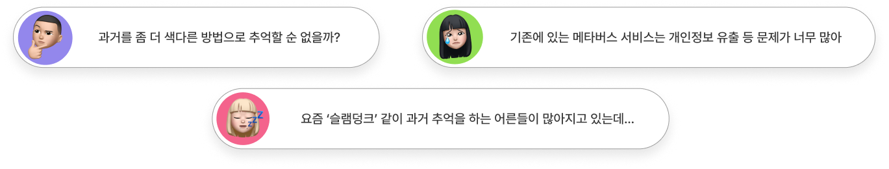
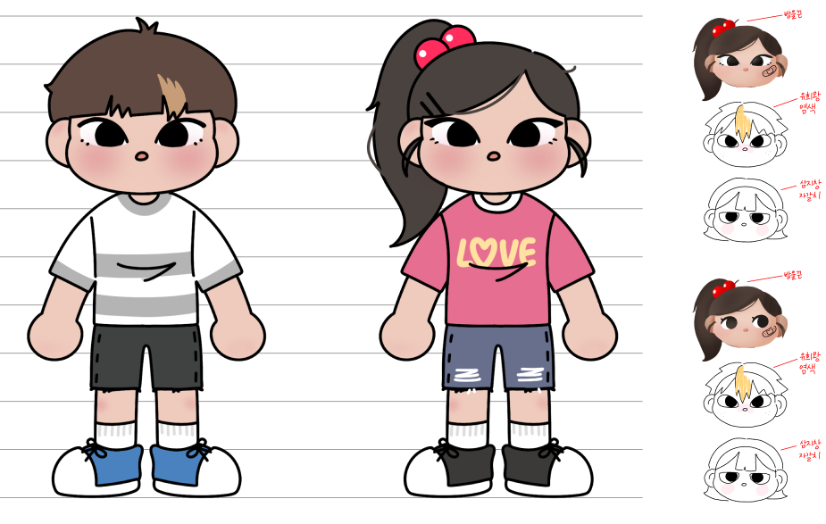
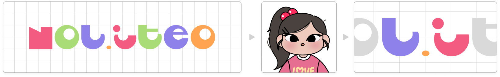
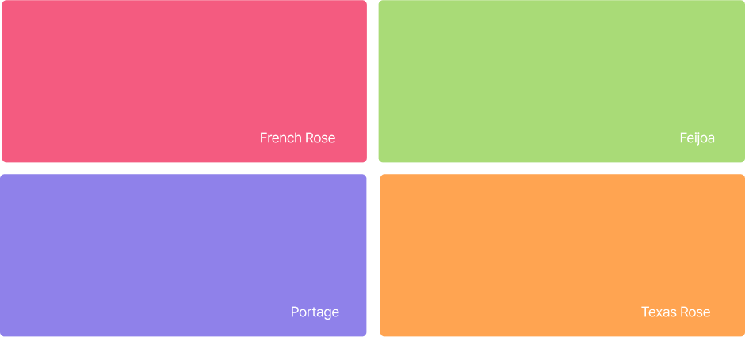

과거와 현재, 그리고 우리의 삶을 이어주는 공간 놀이터
놀이터 Nol-iteo 서비스는 어떤 고민에서부터 시작했을까요?

단순히 메타버스를 소재로 한 SNS 서비스, 커뮤니티가 아닌 추억 회상 등의 컨텐츠와 함께
현재의 삶에도 긍정적인 원동력을 제공할 수 있는 서비스를 만들고자 하였습니다.
과거의 나에게는 위로의 메세지를
맵 곳곳에 랜덤으로 등장하는 NPC들을 찾아보세요. 등장하는 NPC의 나이에
따라 여러분들의 과거가 될 수도, 미래가 될 수도 있어요.
사용자들이 NPC에게 적어준 위로의 메세지는 문방구의 뽑기기계에 저장되어
또 다른 사용자들이 뽑기기계에서 뽑아 읽어볼 수 있답니다.
미래의 나에게는 응원의 메세지를
맵에 배치되어 있는 우체통에서 예약 메세지 기능을 통해 미래의 나에게
응원의 메세지를 보낼 수 있어요. 사용자가 직접 수신방법, 수신날짜를
지정할 수 있어요. 정해진 날에 놀이터가 여러분들에게 전달해드릴게요.

캐릭터에 입이 없는 이유?
사용자가 표정을 상상할 수 있게 하려는 의도예요. 서비스를 사용하는 사용자가
문구점을 지나며, 학교를 다니며 과거에 어떤 경험을 했는지 알 수 없기에,
놀이터 서비스를 이용하며 사용자가 서비스를 즐기며 웃거나 무표정이 아닌
캐릭터 표정을 자유롭게 상상할 수 있어요.
놀이터 로고 디자인
각져있지만 곡선의 형태로 이루어진 폰트를 변형시켜 놀이터의 모험적인 느낌을 나타내고
L과 I의 모양이 놀이터 캐릭터가 눈을 감고 힐링하는 듯한 얼굴로 보이게끔 디자인 했어요.


놀이터 색에 담긴 의미
분홍 희망적 - 과거 치유, 희망
초록 재개/회복 - 회복
보라 미래지향적 - 미래로 나아가길 바람
주황 모험적인 - 서비스 내에서 모험적으로 체험하며 힐링
색마다 담겨있는 의미들을 고려하여 놀이터 아이덴티티 컬러를 선정했어요.
우리, 놀이터에서 만나요!